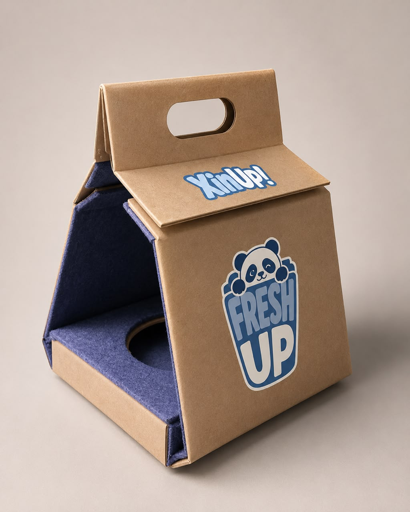

Selecciona “Guardar como PDF” en la ventana de impresión para conservar una copia del manual.
GUÍA · CUIDADO · SEGURIDAD
Manual de uso y cuidado.
Conoce cómo utilizar, limpiar y conservar correctamente tu termo, además de las recomendaciones de seguridad y cuidado del producto.

GUÍA RÁPIDA
Todo lo que necesitas saber
🔥 CALIENTE
Temperatura máxima de diseño: 100 °C.
⚠ SEGURIDAD
No utilizar sobre fuentes de calor ni en microondas.
🧽 LIMPIEZA
Lavar a mano con jabón suave y esponja no abrasiva.
💧 CUIDADO
Evitar humedad en el empaque y cambios bruscos de temperatura.
ANTES DE UTILIZAR
Diseñado para acompañarte.
Este termo fue diseñado para contener y conservar bebidas calientes. Su estructura combina un recipiente interior de acrílico, aluminio y una capa exterior de fibra de vidrio con resina.
El recipiente interior es el componente destinado al contacto directo con la bebida.
COMPOSICIÓN
¿De qué está hecho?
El termo integra diferentes materiales que trabajan en conjunto para proporcionar estructura, resistencia y funcionalidad.
Vaso interior
Fabricado en acrílico y destinado a contener la bebida.
Fibra de vidrio y resina
Forma parte de la estructura exterior del termo.
Espuma de poliuretano
Se ultilizó para reducir la transferencia de calor.
Arcilla
Se usó para recubrir toda la estructura interna y darle un buen ascabado al termo.
01 · USO
¿Cómo utilizarlo?
Sigue estos pasos para utilizar el termo correctamente.
- Verifica que el recipiente interior esté limpio y en buen estado.
- Introduce cuidadosamente la bebida caliente.
- No llenes completamente el recipiente. Deja aproximadamente un 10 % de espacio libre.
- Coloca correctamente la tapa.
- Transporta el termo preferentemente en posición vertical.
02 · TEMPERATURA
Hasta 100 °C de temperatura de diseño.
El prototipo establece una temperatura máxima de diseño de 100 °C para bebidas calientes.
Esta especificación corresponde al diseño del prototipo y deberá comprobarse mediante pruebas experimentales antes de considerar el producto apto para comercialización.
El contenido puede provocar quemaduras cuando se encuentre a temperaturas elevadas.
03 · SEGURIDAD
Evita daños y accidentes.
Para conservar el producto en buenas condiciones y utilizarlo de manera segura, sigue estas recomendaciones.
NO CALENTAR
No colocar directamente sobre estufas, parrillas u otras fuentes de calor.
NO MICROONDAS
No introducir el termo en hornos de microondas.
EVITAR GOLPES
No someter el producto a golpes, presión excesiva o deformaciones.
CAMBIOS DE TEMPERATURA
Evitar cambios bruscos entre líquidos muy calientes y fríos.
04 · LIMPIEZA
Mantén limpio tu termo.
Una limpieza adecuada ayuda a conservar el recipiente y mantenerlo en buenas condiciones de uso.
- Deja enfriar el termo antes de lavarlo.
- Retira la tapa.
- Lava el recipiente interior con agua y jabón suave.
- Utiliza una esponja no abrasiva.
- Enjuaga completamente.
- Seca antes de almacenarlo.
05 · MANTENIMIENTO
Cuida sus materiales.
Para proteger el acrílico, aluminio, fibra de vidrio y resina, evita utilizar fibras metálicas, productos abrasivos, solventes o sustancias químicas agresivas.
No se recomienda lavar el producto en lavavajillas debido a las condiciones de temperatura a las que podría estar sometido.
06 · ALMACENAMIENTO
Cuando no lo estés utilizando.
Mantén el termo limpio y seco. Almacénalo en un lugar fresco, seco y alejado de fuentes directas de calor.
Se recomienda mantener la tapa retirada o ligeramente abierta para permitir la ventilación.
07 · EMPAQUE
Un empaque con una segunda vida.
Parte de el empaque fue elaborado mediante el aprovechamiento de cartones de huevo reutilizados.
El material fue triturado, hidratado y transformado en pulpa de papel. Después, la pulpa fue extendida, prensada y secada para formar nuevas láminas utilizadas en la fabricación del empaque.

PROCESO DE RECUPERACIÓN
Del residuo al empaque.
Cartón
Recolección de cartones de huevo utilizados.
Trituración
El cartón se tritura y se mezcla con agua.
Pulpa
Se obtiene una mezcla de fibras de papel.
Nueva lámina
La pulpa se prensa y se deja secar para obtener el material.
CUIDADO DEL EMPAQUE
Mantener seco.
Debido a que el empaque está elaborado principalmente con pulpa de papel, debe mantenerse protegido de la humedad y del contacto directo con agua.
Después de retirar el producto, el empaque puede conservarse para darle un segundo uso como organizador o contenedor.
08 · REFERENCIAS NORMATIVAS
Diseño responsable.
El desarrollo del producto y su empaque considera criterios relacionados con información comercial, seguridad, manipulación y aprovechamiento de materiales.
Referencia para la información comercial y el etiquetado general del producto.
Referencia relacionada con condiciones de higiene y materiales destinados al contacto con alimentos y bebidas.
Referencia para símbolos gráficos de manipulación y almacenamiento utilizados en el empaque.
Familia de normas utilizada como referencia para criterios ambientales aplicables al diseño y recuperación de empaques.
09 · FIN DE VIDA
Separar para recuperar.
Al finalizar la vida útil del producto, se recomienda separar sus componentes de acuerdo con sus materiales.
El aluminio puede dirigirse a sistemas de recuperación de metales cuando estén disponibles.
El acrílico y los materiales compuestos deberán gestionarse de acuerdo con las opciones disponibles localmente.
El empaque de papel puede separarse del producto y destinarse a los sistemas de recuperación de papel disponibles.
NOTA DEL PROTOTIPO
Información importante.
Este producto corresponde a un prototipo académico. Las especificaciones de temperatura, resistencia, aislamiento y contacto con bebidas deberán ser verificadas mediante pruebas experimentales antes de considerar el producto apto para comercialización.
Las referencias normativas incluidas en este manual funcionan como criterios de diseño y documentación del proyecto y no significan que el prototipo se encuentre certificado conforme a dichas normas.
FICHA DEL PRODUCTO
Guarda esta información.
Checklist de cuidado
Temperatura máxima de diseño: 100 °C.
El contenido caliente puede provocar quemaduras. Manipula el termo con precaución.